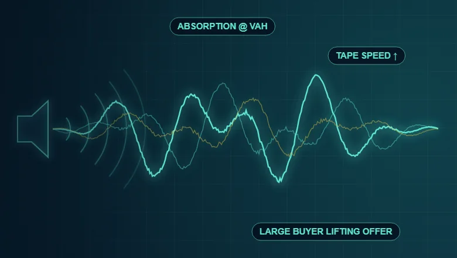
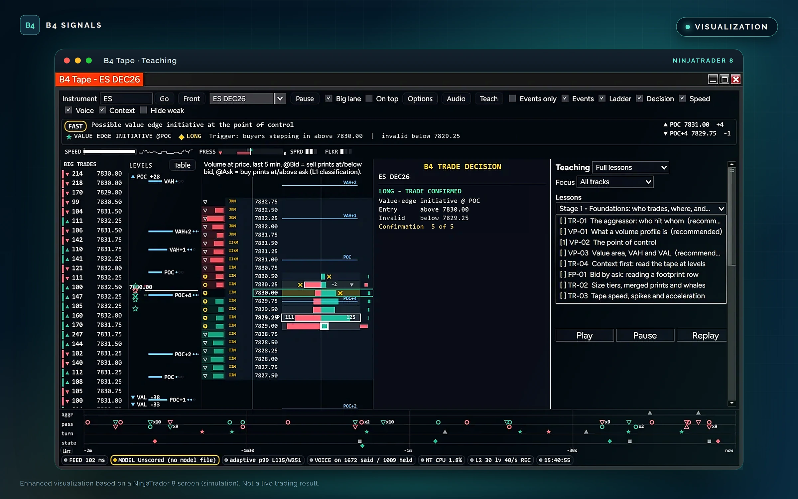
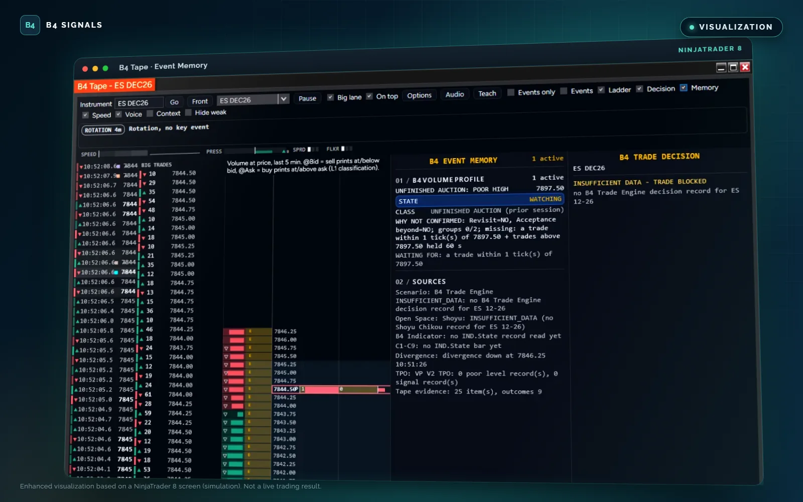
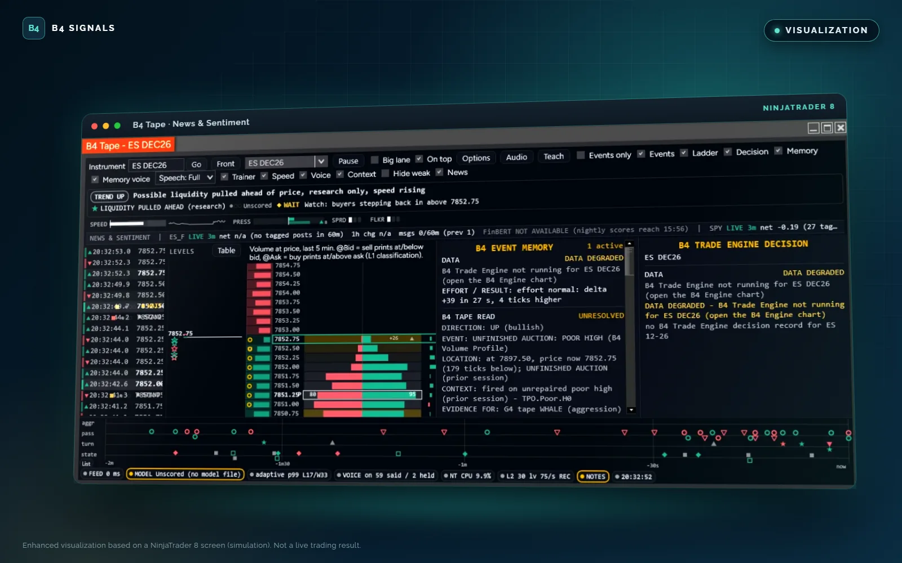
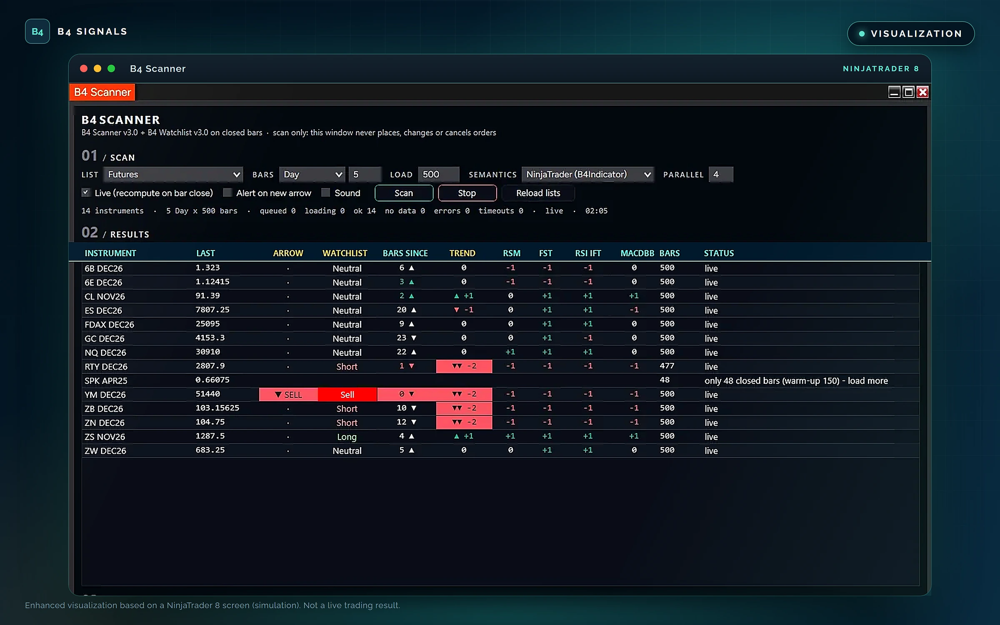
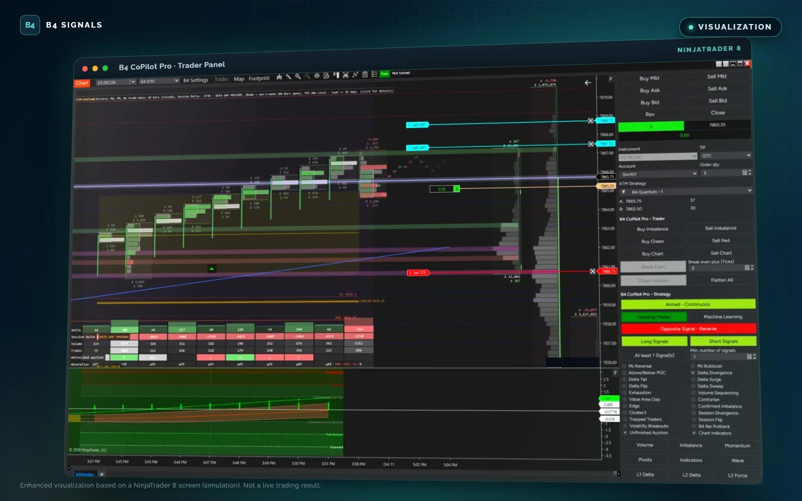
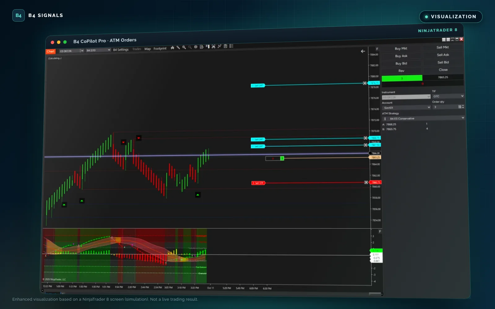

Monthly Membership
$150 / month
Full access to B4 Signals tools and indicators, plus the NinjaTrader 8 toolkit: Tape, L2 DOM Pro and Scanner.
Billed monthlyBuy nowFrom technical signals and market structure to footprint analysis and strategy execution with B4 CoPilot Pro, B4 Signals brings specialized trading products into one connected workflow.
Platform support varies by product. No indicator can guarantee a trading outcome.
This Black Friday, B4 Signals is opening the door to more ways to access our trading technology.
Choose the membership that fits your needs:
Full access to B4 Signals tools and indicators, plus the NinjaTrader 8 toolkit: Tape, L2 DOM Pro and Scanner.
Billed monthlyBuy nowSave $53 versus paying monthly. Includes the NinjaTrader 8 toolkit: Tape, L2 DOM Pro and Scanner.
Billed every 3 monthsBuy nowOur best value: save $903 versus paying monthly. Includes the NinjaTrader 8 toolkit: Tape, L2 DOM Pro and Scanner.
Billed annuallyBuy nowA single payment for the current B4 membership products. New products and future major versions may require a separate purchase.
Single payment, not a subscription · One-Time Sale termsBuy nowWe're expanding the B4 ecosystem with an AI trade desk: market briefings, evidence fusion, explainable decisions and automated execution through B4 CoPilot Pro.
Arriving this Black Friday.
You have a path forward, too. Eligible existing members can add B4 Quantum AI for $50 per month, subject to the applicable access terms.
Whether you're joining B4 for the first time or continuing your journey with us, this Black Friday is about choosing the membership and tools that fit your trading goals.
For educational purposes only. Not trading advice. Trading involves risk. Membership benefits, platform compatibility, AI access, and promotional terms apply.
Explore the B4 ecosystem by job to be done. Each tool has a specific role; platform availability and release status are listed on its product card below.
Explore B4 Algo, Shoyu, Squeeze and other analytical tools for trend, pattern and market-structure context.
Explore analysis tools →▥Review footprint, cumulative delta, volume profile and related tools for understanding activity at price.
Explore order-flow tools →⌁Explore B4 CoPilot Pro, the strategy execution engine, plus B4 L2 DOM Pro for trade management and B4 Tape as an informational market view.
Explore execution tools →Each product lists the platforms it supports: TradingView, NinjaTrader 8, or both.
Filter by product role, then select any product for its full description.
The core B4 signal engine: trend, Ichimoku and VWAP context, machine-learning signals, HUD and profit-taking triggers.
Ichimoku-based trend structure: directional bias, price against key Ichimoku levels, and structural support and resistance.
Spots price compression and consolidation, then tracks breakout or breakdown as momentum expands out of the range.
Volume at price plus footprint order flow: point of control, value area high and low, imbalances, and absorption or rejection at key levels.
Bid/ask volume at every price level with delta, imbalance and absorption analysis, showing the buying and selling inside each bar.
Tracks cumulative volume delta to show whether buying or selling pressure is building, fading, or diverging from price.
A streamlined B4 analysis tool for reading market conditions without unnecessary complexity, built to fit the wider B4 methodology.
The B4 strategy execution engine: B4 API indicator signals, order flow and multi-signal confirmation, run under your rules.
Wave-based market structure: follow trend development and spot potential reversals, with optional input to CoPilot Pro workflows.
Draws Ichimoku P and Y patterns with Chikou Span analysis, consolidation boxes, and mapped entry, stop and target levels.
The AI Automated Trade Desk: market briefings, evidence fusion, explainable decisions and automated execution.
B4 Tape, B4 L2 DOM Pro and B4 Scanner work together as one NinjaTrader 8 toolkit for market information, execution and scanning, all included with Monthly, Quarterly and Annual B4 memberships.
Market levels, signals, order-flow evidence, and context in an informational workspace.
Explore B4 Tape →NinjaTrader 8 add-on · Included with recurring membershipsDOMDepth-of-market and trade-management interface for controlled interaction with orders and positions.
Explore B4 L2 DOM Pro →NinjaTrader 8 add-on · Included with recurring membershipsSCScan supported markets and surface potential opportunities using B4 signals and conditions.
Explore B4 Scanner →Already a B4 member? Your current B4 installs stay yours. Move to a Monthly, Quarterly or Annual membership to add the full NinjaTrader 8 toolkit and the newest B4 tools.
B4 Tape is a specialized NinjaTrader 8 add-on built around a powerful idea: traders should learn to understand what the market is doing, why it matters, and how the evidence connects to their trading system.
Its integrated Audio Squawk Box and tape-reading coach brings market commentary and educational analysis together, connecting Auction Market Theory, footprint reading, volume and TPO profiling, market microstructure, Ichimoku, and the broader B4 methodology.
With an educational framework encompassing 130+ absorption and market-microstructure setups, B4 Tape is designed to help traders understand relationships between indicators, price levels, order flow, and developing market conditions—not simply react to isolated alerts.

The squawk box is the centerpiece of B4 Tape. Its purpose goes beyond announcing that a signal fired: it helps explain the relevant evidence and reinforce the principles used to interpret it.
Study acceptance, rejection, balance, imbalance, price discovery, and the ongoing auction between buyers and sellers.
Understand how B4 indicators and compatible signals contribute to a broader analytical picture.
Learn to interpret buying and selling pressure, stacked imbalances, absorption, and other supported order-flow evidence.
Explore volume distribution, time-at-price structure, VAH and VAL, POC relationships, and important profile areas.
Study consolidation, compression, breakout attempts, acceptance, rejection, and failed moves.
Develop a deeper understanding of trend structure, Chikou Span relationships, confirmation, and the interaction of B4 signals with Ichimoku analysis.
Examine liquidity walls, liquidity vacuums, tape speed, aggressive participation, and changing market pressure.
Understand how multiple pieces of evidence can reinforce, weaken, or contradict a developing market scenario.
Recognize the interaction. Understand the context. Evaluate the confirmation.
B4 Tape's educational framework encompasses more than 130 absorption and market-microstructure setups built around the indicators and market information available on your chart.
Rather than evaluating each signal in isolation, these setups focus on relationships among price action, order flow, market structure, and the B4 analytical ecosystem.
The objective is to help traders understand what evidence is present, what confirmation may be missing, and when conflicting signals warrant caution.
B4 Tape is designed to connect technical information with the methodology behind its interpretation. Its educational approach distinguishes established B4 teaching principles from software-generated observations, helping users understand the difference between what an indicator reports, what the combined evidence suggests, and what still requires confirmation.
The audio experience is designed around different learning and analysis needs, including:
These modes are intended to adjust the depth and purpose of the commentary, not change the underlying evidence.
B4 Tape is designed to distinguish between a signal firing, a potential setup developing, confirmation being established, and an actual trade being executed. B4 Tape keeps these events clearly separate.
When supported data is available, commentary can explain the relevant signal, direction, price, source, and evidence, including subsequent confirmation or failure where the configured workflow supports it.
When information is missing, invalid, or conflicting, B4 Tape is designed to say so rather than present it as confirmed. The goal is clear, evidence-based market education—not unsupported predictions.
B4 Tape operates as an informational and analytical add-on within the B4 Signals ecosystem. It complements the trader's existing chart and execution environment while keeping its role separate from order management.



Enhanced visualizations based on NinjaTrader 8 screens from a simulation account (Sim101).
B4 Tape — 130+ setups. A powerful audio squawk box. Deeper understanding of the B4 system and the market auction.
For educational and research purposes only. Not trading advice. Market analysis and pattern recognition do not guarantee market direction or profitable outcomes. Features and audio modes may vary by release.
Built for traders who work directly from the order book, B4 L2 DOM Pro is designed to help you examine the relationship between resting liquidity, executed buying and selling, and the market's response as price moves through important levels.
It brings together the information needed to assess the order book, monitor changing liquidity, and manage supported trading actions within the NinjaTrader environment.
Understand how the resting order book changes as buyers and sellers compete for price.
Examine bid and ask liquidity across available price levels.
Observe changes in displayed liquidity as orders accumulate or are removed.
Follow how resting liquidity shifts across price levels.
Identify concentrations of displayed orders that may influence price behavior.
Compare bid and ask depth to evaluate displayed buying and selling interest.
Examine supported trade activity that may reveal aggressive participation.
Study displayed size that repeatedly refills at a price, and the related execution patterns, where the available data supports that analysis.
These observations provide context, not certainty. Displayed liquidity can change or disappear, and an apparent liquidity event does not guarantee a price reaction.
Market depth shows resting orders; executed trades show where transactions actually occur. B4 L2 DOM Pro is designed to help bring these perspectives together.
Complement depth information with compatible footprint and executed-volume analysis.
Examine situations where aggressive trading meets opposing liquidity and price response appears limited.
Evaluate supported buying-versus-selling activity and volume imbalances.
Assess changes in liquidity and aggressive participation as market conditions develop.
Compare order-book changes and executed flow with the market's actual movement.
The result is a more comprehensive view of market microstructure than displayed bid and ask quantities alone can provide.
B4 L2 DOM Pro is also designed to support a focused trade-management workflow within NinjaTrader 8.
Available actions depend on your release, account, and configuration, and the supported order types and controls are documented with each release.
B4 L2 DOM Pro complements the broader B4 toolset:
Each component has a distinct role. The DOM provides its dedicated market-depth and trade-management interface; it does not replace the analytical or educational functions of the other B4 tools.
B4 L2 DOM Pro is designed around controlled trade-management workflows, actual NinjaTrader order states, and safeguards against invalid or duplicate actions. Supported controls are designed to respect your configured account and execution rules.
The DOM is a dedicated NinjaTrader 8 add-on—not a standalone web trading platform. Supported environments and account requirements are listed with each release.
B4 L2 DOM Pro — B4 Order Flow + Liquidity + Execution.
For educational and research purposes only. Not trading advice. Market-depth information is incomplete and can change rapidly. Liquidity observations, order-flow analysis, and trade-management controls do not guarantee execution quality or profitable outcomes. Features may vary by release.
B4 Scanner is a specialized NinjaTrader 8 add-on designed to help traders monitor instruments, identify developing market conditions, and surface potential trading scenarios using the B4 analytical ecosystem.
Instead of manually reviewing every instrument and indicator, B4 Scanner is designed to organize relevant market information into a focused view, helping traders recognize where conditions may warrant closer attention.
By bringing compatible B4 signals and market-analysis criteria together, the scanner helps connect broad market monitoring with deeper chart-based evaluation.
Review supported instruments and identify those meeting configured scanning criteria.
Surface available B4 signals and analytical conditions where supported by the integrated indicators.
Review supported trend conditions and relationships with relevant market-analysis tools.
Incorporate available VWAP and price-level information into the scanning workflow.
Evaluate supported indicator states and confirmation criteria.
Identify supported consolidation, squeeze, and potential breakout scenarios.
Incorporate compatible footprint, delta, cumulative volume delta (CVD), and profile information where implemented.
Bring multiple supported conditions together to help prioritize instruments for further review.
A scanner should do more than produce a list of symbols. B4 Scanner is designed to help traders distinguish between a developing scenario, an indicator signal, and a setup that has met its configured confirmation requirements.
It is designed to organize relevant conditions into a clear overview, helping traders identify what is present, what may still need confirmation, and which charts deserve closer attention.
Scanner results are informational. They do not automatically establish that a trade is valid, and a detected condition should not be treated as a guaranteed opportunity.
B4 Scanner complements the wider B4 trading toolset:
Together, these tools support a workflow that moves from scanning instruments, to examining the evidence, to making an informed trading decision.
B4 Scanner is a dedicated NinjaTrader 8 add-on—not a standalone web-based scanner or an independent trading platform. The scanning universe, supported indicators, refresh behavior, filters, and output fields are defined for each release.

Enhanced visualizations based on NinjaTrader 8 screens from a simulation account (Sim101).
B4 Scanner — Find the conditions. Focus your analysis. Let the evidence guide your next review.
For educational and research purposes only. Not trading advice. Scanning results and indicator signals do not guarantee valid setups or profitable outcomes. Features may vary by release.
B4 CoPilot Pro is the strategy execution engine of the B4 Signals ecosystem for NinjaTrader 8. It brings together supported order-flow signals, market-condition filters, trend analysis, indicator-generated signals, and trade-management controls so traders can configure and run trading workflows around their own rules.
Through B4 API integration, CoPilot Pro can consume supported indicator signals exposed through the API, allowing compatible indicators to contribute their signals and confirmation information to the execution workflow—without requiring every signal source to be a native CoPilot Pro indicator.
CoPilot Pro connects analysis to action, evaluating each incoming signal against the conditions you define before a workflow responds.
Connects compatible indicator signals exposed through the B4 API to CoPilot Pro workflows, so indicator-generated signals contribute to analysis and trade-condition evaluation.
Works with multiple compatible indicator signal providers, subject to API compatibility and signal definitions.
Combines supported buying and selling pressure, delta, footprint, and market-depth information to evaluate developing market conditions.
Combines supported signals and filters according to your configured conditions before a workflow responds.
Evaluates directional trends and changing market conditions using the features available in your release.
Uses compatible analytical filters to check whether incoming signals meet your configured requirements.
Supports trade-management workflows and controls within NinjaTrader 8.
Connects with compatible B4 analytical tools and signal sources through the B4 API.
CoPilot Pro creates a common integration path for indicator signals while preserving the distinction between generating a signal, evaluating its conditions, and authorizing an execution action.
API availability alone does not make every indicator compatible: each integration exposes the required signal data and conforms to the supported B4 API contract.
CoPilot Pro acts only within the rules, filters, and trade-management settings you configure. Automated and assisted execution still carries risk, so validate any configuration in simulation or playback before trading live.
Each B4 tool has a distinct role; CoPilot Pro is where confirmed analysis becomes execution:


Enhanced visualizations based on NinjaTrader 8 screens from a simulation account (Sim101).
B4 CoPilot Pro — Connect indicator signals. Configure confirmation. Execute your strategy with discipline.
For educational purposes only. Not trading advice. Trading involves substantial risk. Indicator signals, filters, and automated or assisted workflows do not guarantee fills, execution quality, or profitable results. Features may vary by release.
B4 Funding is your gateway to elite trading, equipping you with institutional-grade tools, intelligent automation and expert-led training. It is the advanced futures prop desk of the B4 ecosystem, with community features and interactive learning built in.
Join the movement redefining what it means to trade funded.
A structured, performance-driven path from your first lesson to trading capital under the B4 banner.
Master the B4 methodology, from original Ichimoku structure to order flow, footprint and volume profile, through the self-paced B4 AMP education program.
Trade the full B4 ecosystem in simulation with daily journaling, strategy testing and performance benchmarks on the B4 Leaderboard.
Complete your assessments, evaluation scorecard and a strategy review interview modeled on a real funding panel to earn certification.
Top performers are invited to pursue capital allocation through B4 Funding and trade under the B4 banner.
For educational purposes only. Not trading advice. Funding eligibility is based on evaluation results and B4 Funding program criteria; no participant is guaranteed funding, capital allocation or profits. Trading involves substantial risk.
Every B4 tool has a job, and together they turn market noise into a clear, repeatable process: read the market, see the order flow, find the setup, and execute with discipline.
And this Black Friday, B4 Quantum brings it all together in one AI trade desk.
B4 Algo, Shoyu, Squeeze, Wave and the B4 PY Indicator map trend, Ichimoku structure, compression and P and Y patterns, so you know the conditions before you place a trade.
B4 Footprint Pro, Volume Profile and CVD reveal who is in control at every price, while B4 Tape talks you through the evidence with its audio squawk box.
B4 Scanner surfaces the instruments worth your attention, and B4 L2 DOM Pro shows you the liquidity waiting at every level.
B4 CoPilot Pro, the strategy execution engine, acts on your rules and confirmation. Prefer to drive? B4 L2 DOM Pro puts stops, targets and flatten controls at your fingertips.
Replay sessions, track outcomes and work through B4 Tape's lessons, so every session makes the next one sharper.
Order-flow, execution and indicator tools are usually sold one at a time. Here is what the same categories cost elsewhere, compared with a single B4 membership.
Ranges from public price lists of other trading-tool vendors, checked October 2026. Prices elsewhere change; features are not identical across vendors.
The AI Automated Trade Desk brings every B4 tool into one intelligent workspace: AI market briefings, evidence fusion, explainable decisions and automated execution through B4 CoPilot Pro.
An AI trade desk built to read the market like a disciplined professional: gather the evidence, weigh it, explain it, and act only when the case is strong enough. Quantum decides, B4 Tape explains, B4 L2 DOM Pro gives you control, and B4 CoPilot Pro executes.
Behind the desk, the Quantum Research Lab handles strategy research and validation.
Already a B4 member? Eligible existing members can add B4 Quantum for $50/month.
Available now. The B4 PY Indicator draws professional Ichimoku P and Y patterns with Chikou Span analysis and mapped entry, stop and target levels.
Trading blogger, YouTuber or community leader? Earn 15% of every subscription payment from the traders you refer, for as long as their account stays active. You get credit for any purchase within 90 days of a click, commissions are paid monthly via PayPal, and promotional materials and affiliate support are included.
See what each B4 tool does, which platforms it supports, and what's arriving this Black Friday.
Open any product for its full description, then see the tools in action in NinjaTrader 8.
Browse products →See which tools run on TradingView, NinjaTrader 8, or both.
View platforms →See how the AI Automated Trade Desk connects the entire B4 ecosystem.
See what's next →Founder, B4 Signals
B4 Signals builds the indicators, order-flow tools, strategy execution engine and education that B4 members use in NinjaTrader 8 and TradingView.
Explore the B4 lineup and choose the membership that fits your trading.
The Integrated B4 Trading Analysis and Signal Engine
B4 Algo is the core indicator and analytical engine of the B4 Signals ecosystem, available for TradingView and NinjaTrader 8. It consolidates B4's proprietary indicator technology, market analysis, trend evaluation, signal generation, and integrated trading-context functionality into a unified analytical framework.
B4 Algo is designed to do more than display indicator readings. It provides analytical information that can integrate with B4 Tape and compatible B4 tools to help traders interpret market conditions, evaluate trade opportunities, manage trade context, and identify potential profit-taking conditions.
B4 Algo is the foundation; compatible B4 tools extend how its analytical information is presented and used. B4 Tape provides a dedicated market-analysis and order-flow interface, B4 L2 DOM Pro provides an execution-focused interface, and B4 Scanner provides a market-scanning interface. B4 Brackets, HUD functionality, and profit-taking triggers complement the broader analytical and trade-management workflow where supported.
B4 Algo — One core analytical engine. Integrated market intelligence. A connected B4 trading workflow.
For educational and research purposes only. Not trading advice. Trading involves substantial risk, and analytical signals or profit-taking triggers do not guarantee results.
Advanced Ichimoku Trend Structure and Market Analysis
B4 Shoyu is a specialized B4 Signals trading tool focused on Ichimoku-based trend structure, market direction, and price-action context. It is designed to help traders evaluate the relationship between price, trend structure, and potential areas of support and resistance within the broader B4 analytical framework.
By focusing on Ichimoku principles and their application to market structure, B4 Shoyu provides a dedicated approach to interpreting trend conditions, assessing directional bias, and evaluating how price behaves relative to key structural levels.
B4 Shoyu focuses on understanding market structure rather than treating individual indicator readings as isolated trade signals. Its role is to help traders interpret trend conditions and evaluate price behavior within an Ichimoku-based framework.
B4 Shoyu — Ichimoku structure. Directional context. Disciplined market analysis.
For educational and research purposes only. Not trading advice. Trading involves substantial risk, and indicator signals do not guarantee results.
Market Compression. Momentum Expansion. Breakout Analysis.
B4 Squeeze is a market-analysis indicator designed to identify periods of price compression and consolidation and help traders recognize when market conditions begin transitioning toward potential directional expansion.
By highlighting squeeze conditions and developing breakout or breakdown behavior, B4 Squeeze helps traders evaluate changes in volatility, assess emerging momentum, and identify situations where price may be preparing to move beyond an established range.
Rather than treating every price movement as a trading opportunity, B4 Squeeze focuses on the relationship between consolidation and expansion, providing additional context for evaluating market conditions and potential trade setups.
Markets frequently alternate between periods of consolidation and directional movement. B4 Squeeze is designed to help traders recognize these transitions and evaluate whether emerging price action supports further investigation of a potential setup.
A squeeze condition does not, by itself, establish breakout direction or guarantee a successful move. Confirmation from price action, trend context, volume, and other relevant market information can help traders evaluate the quality of a developing opportunity.
B4 Squeeze — Recognize compression. Evaluate expansion. Analyze the move.
For educational and research purposes only. Not trading advice. Trading involves substantial risk, and squeeze or breakout signals do not guarantee results.
Volume Profile. Order Flow. Footprint Analysis. Market Structure.
B4 Volume Profile combines volume-at-price analysis with footprint-based order-flow analysis to help traders examine market participation, identify significant price levels, and evaluate buying and selling activity at a more granular level.
By bringing volume distribution and footprint analysis together, B4 Volume Profile provides complementary views of where trading activity is concentrated and how buyers and sellers interact at individual price levels. This helps traders investigate market acceptance and rejection, potential support and resistance, and developing opportunities around consolidation, breakouts, and reversals.
Volume Profile helps identify where trading activity is concentrated. Footprint analysis adds detail about how buying and selling activity is occurring at individual price levels.
Together, these perspectives help traders investigate market structure, evaluate the behavior of buyers and sellers, and assess whether price movement is supported by the observed order flow.
Volume and footprint signals are analytical evidence, not guarantees of future price direction. Their interpretation depends on data quality, market conditions, and the specific calculations implemented by the platform.
B4 Volume Profile — Map the volume. Read the footprint. Analyze the market.
For educational and research purposes only. Not trading advice. Trading involves substantial risk, and volume-profile or order-flow analysis does not guarantee trading outcomes.
Advanced Order Flow. Bid/Ask Analysis. Market Participation.
B4 Footprint Pro is an advanced order-flow analysis tool designed to help traders examine buying and selling activity at individual price levels. By presenting detailed footprint information, it provides a granular view of executed trading activity to help evaluate order-flow imbalances, potential absorption, aggressive participation, and changes in market behavior.
Built for traders who want to look beyond conventional candles and volume bars, B4 Footprint Pro focuses on the interaction between buyers and sellers within each bar, helping reveal details that may otherwise be difficult to interpret from price action alone.
Price movement tells only part of the story. Footprint analysis provides a closer look at the executed trading activity occurring within that movement.
B4 Footprint Pro helps traders investigate whether buying or selling pressure is concentrated at particular prices, whether activity is producing meaningful price progress, and whether developing order flow supports further analysis of a potential setup.
Footprint readings must be interpreted in context. Delta, imbalance, and apparent absorption do not independently establish future direction or guarantee a successful trade.
B4 Footprint Pro — Analyze bid and ask activity. Evaluate order-flow pressure. Read the market at price level.
For educational and research purposes only. Not trading advice. Trading involves substantial risk, and order-flow signals do not guarantee results.
Cumulative Volume Delta. Buying and Selling Pressure. Market Confirmation.
B4 CVD is a market-analysis tool focused on cumulative volume delta (CVD), helping traders evaluate the balance between executed buying and selling activity over time. By tracking the accumulation of volume delta, it provides additional context for assessing directional pressure, changes in participation, and potential divergences between order flow and price movement.
CVD adds an order-flow perspective to conventional price analysis, helping traders investigate whether buying or selling pressure is strengthening, weakening, or diverging from the market's current direction.
Price shows the market's movement. Cumulative Volume Delta provides another perspective on the buying and selling activity associated with that movement.
B4 CVD helps traders compare price behavior with cumulative order-flow pressure, investigate potential divergences, and evaluate whether buying or selling activity appears consistent with the prevailing market direction.
CVD is a contextual analytical tool, not a standalone prediction engine. Its interpretation depends on the underlying data feed, bid/ask classification, calculation method, and reset or accumulation settings.
B4 CVD — Track cumulative pressure. Evaluate divergence. Add order-flow context.
For educational and research purposes only. Not trading advice. Trading involves substantial risk, and CVD readings do not guarantee future price direction or trading results.
Simplified Market Analysis. Clearer Trading Context.
B4 KISS is a B4 Signals analytical tool designed to support a more streamlined approach to market analysis. It belongs to the existing B4 product family and is intended to complement the broader B4 trading methodology by helping traders interpret market conditions without unnecessary analytical complexity.
Within the B4 Signals ecosystem, B4 KISS represents a dedicated analytical offering for traders seeking a more focused approach to evaluating the market and identifying conditions relevant to their trading process.
B4 KISS is part of the B4 Signals analytical product family.
B4 KISS — Focused analysis. Simplified interpretation. The B4 approach.
For educational and research purposes only. Not trading advice. Trading involves substantial risk, and analytical tools do not guarantee trading outcomes.
Configurable Trade Assistance. Intelligent Order Flow. Integrated Indicator Signals.
B4 CoPilot Pro is the strategy execution engine of the B4 Signals ecosystem for NinjaTrader 8: a configurable trade-assistance and order-flow workflow engine. It brings together supported order-flow signals, market-condition filters, trend analysis, indicator-generated signals, and trade-management controls to help traders configure and evaluate trading workflows around their own rules.
Through B4 API integration, CoPilot Pro can consume supported indicator signals exposed through the API, allowing compatible indicators to contribute their signals and confirmation information to the broader trading workflow. This creates an extensible framework for integrating indicator-based analysis without requiring every signal source to be a native CoPilot Pro indicator.
B4 CoPilot Pro is designed to bring compatible indicator signals into a configurable trading workflow. With B4 API integration, the system can use signals exposed by supported indicators as inputs for analysis, confirmation, and other approved workflow actions.
This approach creates a common integration path for indicator signals while preserving the distinction between generating a signal, evaluating its conditions, and authorizing an execution action.
API availability alone does not mean every indicator is automatically compatible. Each integration must expose the required signal data and conform to the supported API contract.
B4 CoPilot Pro — Connect indicator signals. Configure confirmation. Build a more integrated trading workflow.
For educational purposes only. Not trading advice. Trading involves substantial risk. Indicator signals, filters, and automated or assisted workflows do not guarantee profitable results.
Read the Wave Structure. Recognize Trend Development. Identify Potential Reversals.
B4 Wave is part of the B4 market-analysis family, designed to help traders interpret wave structure, follow developing trends, and recognize potential turning points in price action.
Rather than relying on price movement alone, B4 Wave provides a dedicated wave-analysis perspective that can complement your broader B4 trading workflow. Its signals can also support compatible B4 CoPilot Pro analysis when properly integrated, helping bring wave information into a more comprehensive view of market conditions.
B4 Wave is designed to add another analytical perspective—not replace your judgment or the need to evaluate market context. Use it alongside compatible B4 tools to help assess whether developing wave behavior supports or conflicts with your broader market analysis.
B4 Wave — Understand the waves behind the move.
For educational and research purposes only. Not trading advice. Wave analysis identifies potential market conditions; it does not guarantee direction or profitable outcomes.
Discover Ichimoku P and Y Patterns. Reveal Hidden Structure. Plan with Precision.
B4 PY Indicator is designed to draw professional Ichimoku P and Y patterns, combining proprietary Ichimoku analysis techniques with specialized chart visualizations to help traders recognize market structure and evaluate potential trade opportunities.
Going beyond standard Ichimoku displays, B4 PY incorporates Chikou Span analysis, consolidation boxes, and proprietary Ichimoku insights to help traders examine price relationships, identify periods of consolidation, and better understand developing market conditions.
B4 PY Indicator combines pattern visualization with proprietary Ichimoku analysis to help traders examine the relationships between price, historical price action, and consolidation structure.
Use these insights alongside your broader B4 analysis to evaluate potential entries, define trade parameters, and determine whether a setup meets your confirmation criteria.
B4 PY Indicator — Proprietary Ichimoku insights. Structured patterns. Clearer trade planning.
For educational and research purposes only. Not trading advice. Pattern recognition, consolidation areas, and projected trade levels do not guarantee market direction or profitable outcomes. Specific features may vary by platform and release.
Introducing a New Era of AI-Powered Trading Intelligence.
B4 Quantum is the next evolution of the B4 Signals ecosystem: an AI trade desk built to read the market the way a disciplined professional does—gathering the evidence, weighing it, explaining it, and acting only when the case is strong enough.
It brings the entire B4 family into one intelligent workspace. B4 Algo, B4 Shoyu, the B4 PY Indicator, B4 Squeeze, B4 Wave, footprint, volume profile, and B4 Tape's order-flow evidence feed a single decision engine, while B4 CoPilot Pro—the B4 strategy execution engine—turns confirmed decisions into rules-based action.
Fast enough to watch everything. Disciplined enough to wait.
Powerful analytical tools. Structured process. Meaningful evidence. Disciplined execution. B4 Quantum is designed to bring all four together in one AI-driven trade desk—and to keep getting smarter as the B4 ecosystem grows.
B4 Quantum — AI Automated Trade Desk. Intelligence. Integration. Automation.
Planned for Black Friday.
For educational and research purposes only. Not trading advice. Features described may change before release. AI-generated analysis and automated trading technology cannot guarantee market direction, execution quality, or profitable results. Automated trading carries substantial risk, including losses from technology failures, slippage, and data errors. Features and availability are subject to the final release.